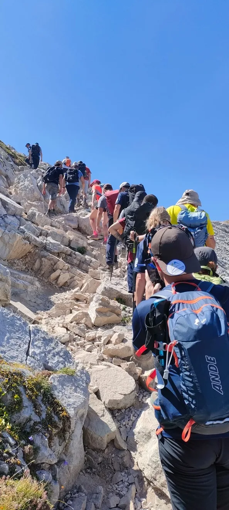

Le prossime uscite
Le uscite si organizzano nel gruppo WhatsApp riservato ai soci. Non sei ancora socio? Scopri come iscriverti all'associazione.
Scala delle difficoltà

-
T – Turistico
Passeggiate brevi su stradine, mulattiere o sentieri ampi. Pendenze minime, orientamento immediato.
-
E – Escursionistico
Sentieri veri e propri su terreno vario, pietraie e pascoli. Possono esserci tratti ripidi, ma sono sempre ben segnalati e non richiedono capacità tecniche, solo un minimo di allenamento.
-
EE – Escursionisti Esperti
Itinerari con singoli passaggi rocciosi dove serve usare le mani, tratti esposti o pendii ripidi e scivolosi. Richiedono assenza di vertigini, passo sicuro e buona capacità di orientamento.
Chi inizia parte da un'uscita T o E: le uscite EE non sono adatte a chi non ha esperienza.
Non sai da dove cominciare? Parti da un'uscita segnata come T o E: percorsi accessibili anche senza esperienza. Se hai dubbi sulle scarpe o sullo zaino, scrivici prima di iscriverti.